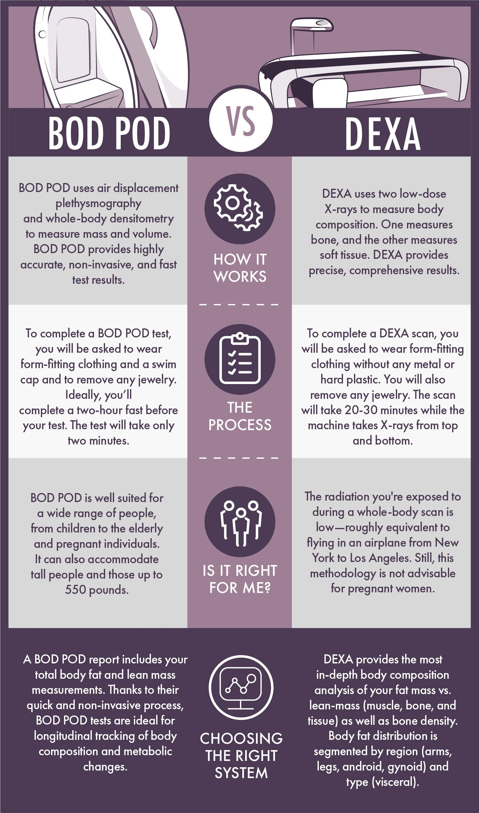

Bod Pod vs. DEXA: Which Scan Is Right for You
19 Bod Pod vs. DEXA: Which Scan Is Right for You? You’ve decided to get a real body composition test. You’ve narrowed it down to two options: Bod Pod or DEXA. Which one should you choose? I get this question at least once a week.
A client has done their research. They know BMI is useless. They want something accurate. But they don’t know the difference between sitting in an egg‑shaped chamber and lying on a table while an X‑ray arm passes over them. Let me break it down. How they work The clinic charged $150. Worth it.
Bod Pod uses air displacement plethysmography. You sit in an egg‑shaped chamber for about five minutes. The chamber measures the volume of air you displace. Combined with your body weight, that gives your body density, then your body fat percentge. No radiation. No water.
No discomfort. DEXA uses dual‑energy X‑ray absorptiometry. You lie on a table for about ten to twenty minutes. An arm passes over you, emitting two low‑dose X‑ray beams. Because fat, muscle, and bone absorb the beams differently, the machine can tell them apart. It gives you total body fat, regional fat (arms, legs, trunk), visceral fat, and bone density. Accuracy
DEXA is the gold standard. Error is about ±1-2% for body fat. That’s excellent. A 2023 validation study comparing DEXA to 4‑compartment models (the true research gold standard) found that DEXA overestimates body fat in very lean individuals by about 1-2% and underestimates in very obese individuals by a similar margin. Bod Pod is very good, but slightly less accurate. Error is about ±2-3%. The test is sensitive to clothing, hair, and facial hair. Men with beards may need to wear a swim cap. Women with long hair need to cover it. Loose clothing or a poorly fitted swimsuit can trap air and throw off the reading. The Body Fat Percentage Estimator can help you compare results from different methods.
What they measure DEXA gives you a full report:
Total body fat percentage Regional fat (arms, legs, trunk, android, gynoid)
Visceral adipose tissue (VAT) – the dangerous fat around your organs
Lean mass (muscle, organs, connective tissue) Bone mineral density (T‑score and Z‑score) Bod Pod gives you:
Total body fat percentge Lean mass (calculated, not directly measured)
No regional data No visceral fat
No bone density If you want to know where you carry fat, DEXA is the answer. If you only care about your total number, Bod Pod is Visceral fat matters
This is the biggest difference. Visceral fat is the fat stored inside your abdominal cavity, wrapped around your liver, pancreas, and intestines. It secretes inflammatory cytokines. It’s linked to insulin resistance, heart disease, stroke, and some cancers. DEXA measures visceral fat. Bod Pod does not. A client of mine, a 45-year-old man named Steve, had a normal BMI and normal total body fat by Bod Pod – 18%. But his DEXA showed visceral fat of 1.6 liters – well into the high‑risk zone. His doctor put him on a metabolic health plan. He changed his diet, reduced alcohol, and added more cardio. Six months later, his visceral fat dropped to 1.1 liters. His Bod Pod number barely changed. If he had only used Bod Pod, he would have thought He smiled. It didn't reach his eyes. He knew. He did it anyway. He wasn’t. The BMI vs Body Fat Analyzer can help you decide if you need a DEXA.
Cost and availability DEXA: $50-150. Available at sports medicine clinics, some gyms, mobile scanning units. More common in cities. Bod Pod: $50-100. Available at some university labs, fitness centers, and weight loss clinics. Less common than DEXA. In Portland, there are three DEXA clinics within a 20‑minute drive. There’s one Bod Pod. Comfort
Bod Pod: You sit in a small chamber with a window. Some people feel claustrophobic. You have to wear tight clothing or a swimsuit. You have to cover your hair. You have to stay still for five minutes. It’s not bad, but it’s not nothing.
DEXA: You lie on a table. An arm passes over you. Very easy. No claustrophobia. You can wear normal clothes as long as there’s no metal. You close your eyes and relax for ten minutes. Radiation
DEXA uses a tiny amount of radiation – about 10 μSv. That’s the same as a cross‑country flight. For context, a chest X‑ray is 100 μSv. A CT scan is 10,000 μSv. The risk is negligible for adults. Bod Pod uses no radiation. For most people, the radiation dose is trivial. For pregnant women, Bod Pod is safer. Repeatability
Both are repeatable if you follow the same protocol. DEXA has slightly better repeatability (±1-2%) than Bod Pod (±2-3%). Which should you choose? Choose DEXA if you want regional fat, visceral fat, bone density, and the most accurate total body fat. Choose DEXA if you’re an athlete tracking muscle symmetry. Choose DEXA if you have osteoporosis risk or a family history of metabolic disease. Choose Bod Pod if you prefer no radiation, a shorter test time, and don’t need regional data.
Choose Bod Pod if you’re claustrophobic about DEXA tables. A friend of mine, a runner named Lena, chose Bod Pod because she didn’t want radiation. She got her number – 22% body fat. She was happy. A year later, she switched to DEXA and discovered her visceral fat was 1.3 liters – moderate risk. She wished she had done DEXA first. The bottom line
Both are excellent tools. DEXA is the gold standard. Bod Pod is a very good alternative. But they’re not interchangeable. DEXA gives you more information. That information can save your life. A client named Frank had a DEXA that showed low bone density. He was 52, male, no symptoms. He started lifting weights and taking vitamin D. A year later, his bone density improved. He told me “I would have never known if I had done Bod Pod.”
The most important thing is to pick one method and stick with it. Don’t compare DEXA to Bod Pod to BIA to skinfolds. That will drive you crazy. Pick a method, use it consistently, track trends. Your body doesn’t care which test you use. It just cares that you’re paying attention.